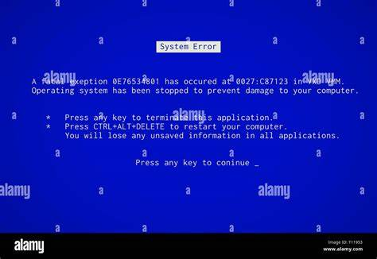

An Operating System (OS) crash occurs when your system encounters a critical error, often resulting in a forced shutdown or restart. This can happen due to corrupted system files, incompatible hardware, or malware.
To prevent an OS crash, ensure your drivers are up to date and avoid installing unverified software.
